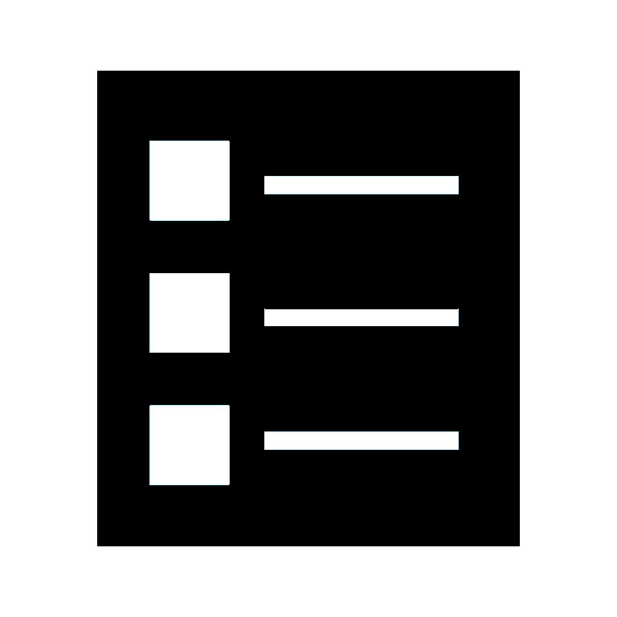
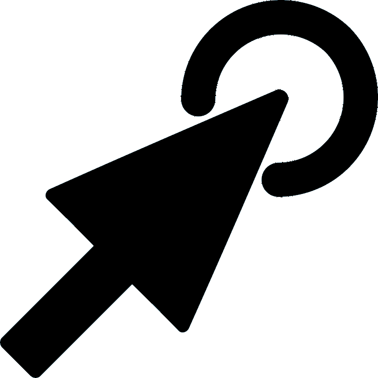

This is an experiment to measure the effect of different menu styles on the efficiency of the menu. In this experiment, I build a mockup to the experiment in the paper Ephemeral Adaptation: The Use of Gradual Onset to Improve Menu Selection Performance. This experiment is a fulfilment for RS1 assignment for CS422 class at the University of Illinois at Chicago.
The anticipated time to complete this experiment is approximately 15 minutes. This experiment consists of 2 tasks. Each task has 126 trials You will have a short practice for each task of 8 trials. After you finish the experiment you will be asked to fill a short questionnaire to gather information about your experience.
 |
15 minutes |
|  | 2 tasks |
|  | 126 trial |
| Questionnaire |
If you wish to begin please click on Start